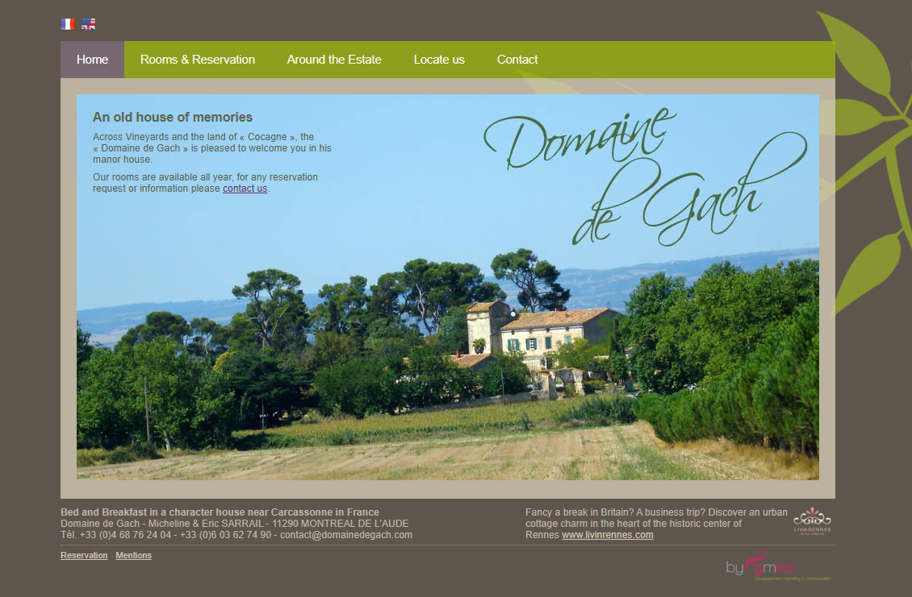
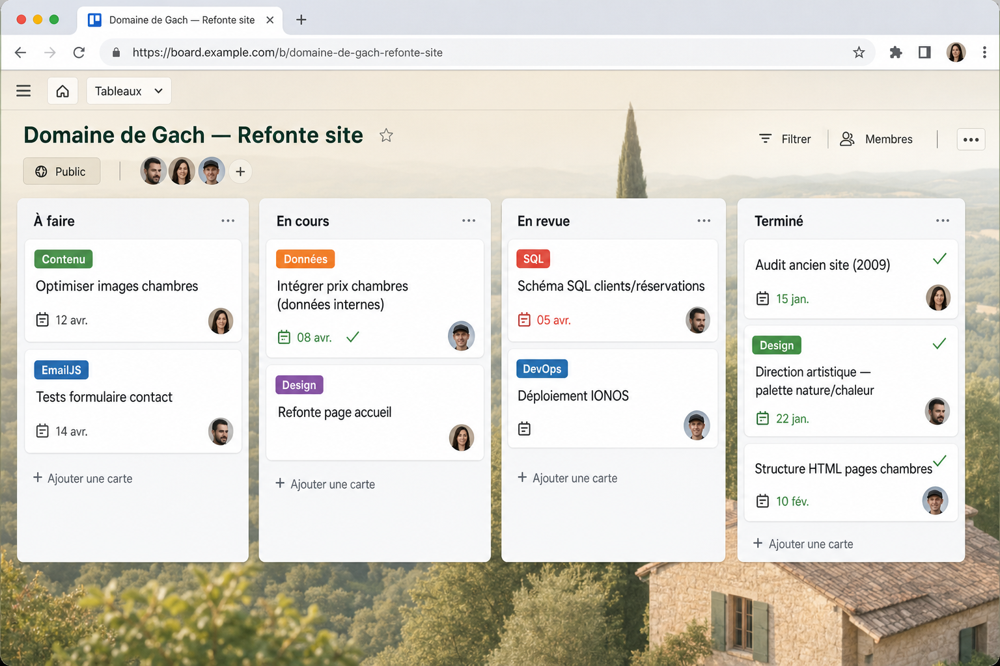
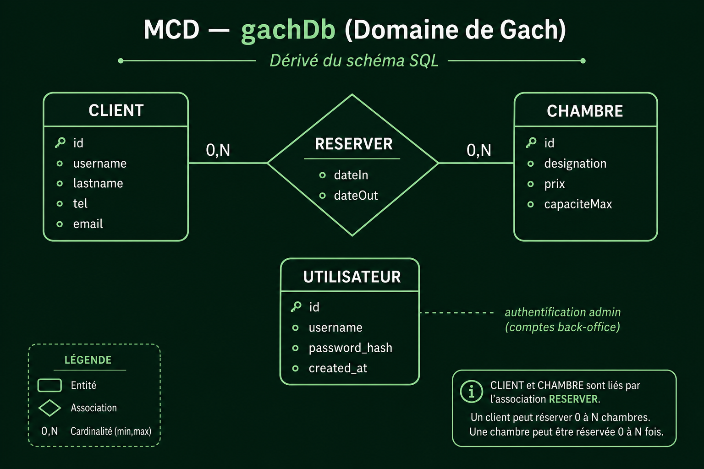

Chambres d’hôtes · Site vitrine · 01/01/2026 au 15/04/2026
Domaine de Gach
Participation à l’évolution de domainedegach.com : site vitrine modernisé en HTML vanilla, appui sur les données de l’organisation, base SQL ajoutée, versionnement GitHub et déploiement sur IONOS.
01 — Contexte
Moderniser un site ancien
Pendant un stage professionnalisant, j’ai participé à l’évolution du site du Domaine de Gach pour remplacer une version ancienne (2009). J’ai m’appuyé sur les données internes de l’entreprise — notamment pour compléter les prix des chambres — et sur leur direction artistique afin d’aller dans le même sens qu’eux, sans trop inventer : moderniser le design tout en conservant l’esprit nature et chaleur du domaine.

Avant
L’ancien site à moderniser
Voilà l’ancien site que j’ai modernisé : une vitrine datée (2009), avec une navigation peu lisible et un rendu peu adapté aux écrans actuels. C’est cette base que j’ai entièrement refaite en HTML, CSS et JavaScript pour aboutir à la version en ligne aujourd’hui.

Après
Le site modernisé : structure plus claire, design actualisé et esprit nature/chaleur conservé, tout en s’appuyant sur les données et la direction artistique de l’établissement.

02 — Suivi de projet
Respecter les deadlines
J’ai organisé l’avancement sur un tableau type Trello : colonnes par statut, labels par thème (design, données, SQL, déploiement…) et dates d’échéance pour tenir le rythme du stage.
Chaque livrable passait par ce suivi avant mise en production — audit, refonte, intégration des prix, schéma SQL. En parallèle, j’ai versionné tout le projet sur GitHub : commits réguliers, historique des évolutions et possibilité de revenir en arrière sur chaque modification.
03 — Réalisations
Ce que j’ai mis en place
- Données métier Exploitation des données de l’organisation pour enrichir le contenu visible — prix des chambres, identité visuelle.
- Déploiement IONOS Mise en ligne sur IONOS (One & One) en remplaçant l’ancien site en production.
- Versionnement GitHub Code source, script SQL et évolutions du site versionnés sur GitHub — commits, branches et historique des modifications.
04 — Données
Schéma SQL et MCD
Le projet n’étant pas totalement finalisé pendant le stage, je l’ai continué sur mon temps libre pour livrer une version de meilleure qualité. J’ai ajouté une base SQL pour gérer les clients et les réservations, avec un modèle conceptuel dérivé du script — mais son exploitation reste pour l’instant limitée côté fonctionnalités visibles sur le site public.
Le dépôt GitHub centralise le code et le schéma SQL : chaque évolution est commitée, tracée et versionnée pour sécuriser les modifications.

gachDb.sql
gachDb (dérivé du SQL)05 — Administration
Espace de gestion
J’ai intégré un formulaire de contact EmailJS côté front pour fluidifier les prises de contact sans alourdir l’infrastructure. Cette partie a déjà permis de générer des demandes réelles.

06 — Déploiement
Mise en ligne et continuité
Après validation, j’ai remplacé l’ancien site sur l’hébergeur IONOS pour publier la nouvelle version. Depuis, je poursuis les améliorations selon les retours terrain et les demandes des exploitants.
Espace réservé à la gestion du domaine